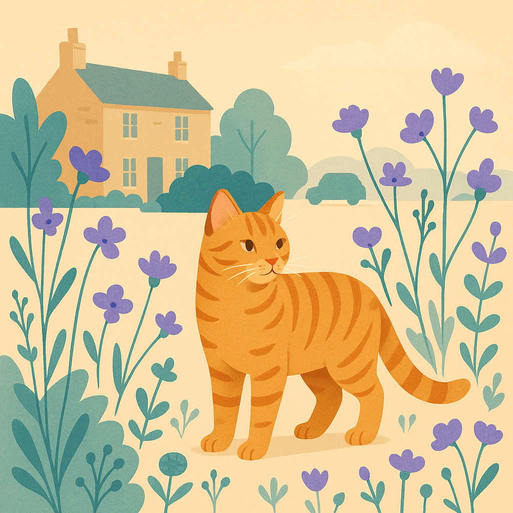
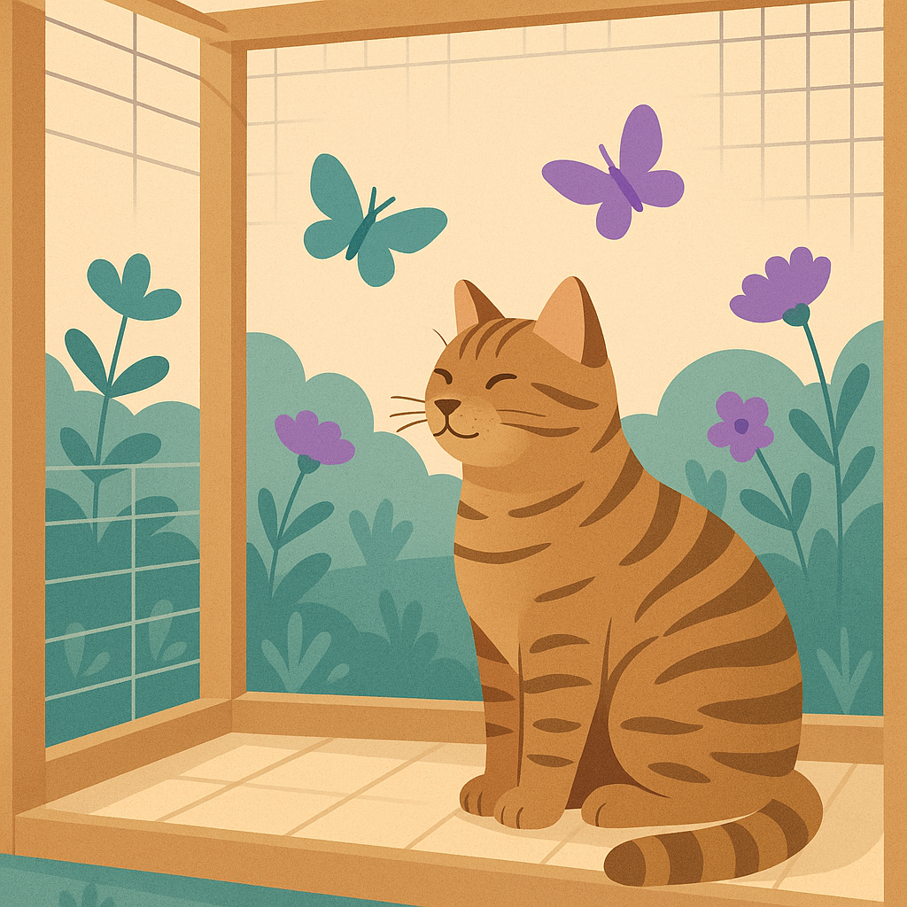

Indoor vs Outdoor Cats — The Real Health Differences
Contents
Lifespan: Indoor vs Outdoor Cats
The most significant health difference between indoor and outdoor cats is lifespan. UK research shows a stark contrast:
Indoor Cats: 12–18 Years Average
With good nutrition and veterinary care, indoor cats typically live 12–18 years. Some reach 20+. They're protected from external hazards and can be monitored closely for health changes.
Outdoor Cats: 5–10 Years Average
Outdoor cats face significantly higher mortality. UK studies suggest an average lifespan of 5–10 years, with many not reaching 5 years. The reasons are tragic and preventable.
The Reality
Outdoor cats live 5–10 years shorter lives on average. This isn't inevitable—it's a consequence of specific, avoidable risks. Understanding these risks helps owners make informed decisions.
Health Risks for Outdoor Cats
Road Traffic Accidents
The leading cause of death in outdoor cats. UK statistics suggest approximately 230,000 cats are hit by cars annually, with many fatal. Cats often don't judge speed or distance accurately, and drivers can't always stop in time.
Vet cost for trauma treatment: £2,000–5,000+ (if survivable)
Infectious Diseases
- Feline Immunodeficiency Virus (FIV): Transmitted via bite wounds from fighting. Weakens immune system over years. No cure. Incurable but manageable with medication.
- Feline Leukaemia Virus (FeLV): Highly contagious among outdoor cats. Often fatal within 2–3 years. More deadly than FIV.
- Feline Infectious Peritonitis (FIP): Viral disease with high mortality rate, particularly in young cats.
Parasites
Outdoor cats face constant exposure to fleas, ticks, worms, and mites. While treatable, chronic parasite exposure causes anemia, skin disease, and secondary infections.
Fights & Injuries
Territorial fights with other cats result in bite wounds, abscesses, and infections. Deep bite wounds can abscess and become life-threatening if untreated.
Poisoning & Toxins
- Antifreeze (sweet taste but deadly)
- Pesticides and rodent poisons
- Plants (lilies, sago palms, etc.)
- Human foods left accessible
Predation & Theft
In some areas, foxes, dogs, or hawks can pose risks. Additionally, cat theft (for various purposes) is a genuine concern, particularly for pedigree cats.
Reality check: Each of these risks is avoidable by keeping cats indoors or in enclosed spaces (catios).

Health Risks for Indoor Cats
While indoor cats live longer, indoor-only living creates different health challenges that responsible owners must address:
Obesity
The most common health problem in indoor cats. Without outdoor space to explore and hunt, indoor cats burn fewer calories. Obesity leads to diabetes, joint problems, and heart disease.
Prevention: Interactive play, puzzle feeders, calorie control, regular exercise
Boredom & Behavioural Problems
Cats are hunters by nature. Without stimulation, indoor cats develop behavioural issues: inappropriate urination (marking), aggression, excessive meowing, destructive scratching.
Prevention: Environmental enrichment (see section below)
Urinary Tract Issues
Stress and poor hydration increase risk of feline lower urinary tract disease (FLUTD). Blocked urinary tracts are emergencies requiring immediate vet care.
Prevention: Multiple water bowls, water fountains, adequate litter boxes, low-stress environment
Dental Disease
Less common outdoors (natural cleaning from diet), more common indoors. Poor diet and lack of natural chewing leads to tooth decay and gum disease.
Prevention: Dental treats, professional cleaning, high-quality diet
Anxiety & Stress-Related Illness
Some indoor cats suffer from anxiety, particularly if environment is boring or chaotic. Stress contributes to overgrooming, inappropriate elimination, and disease.
Prevention: Quiet spaces, vertical territory, predictable routine, minimal stress triggers
The Compromise: Managed Indoor Living
The risks of indoor living are entirely manageable with proper enrichment. Indoor cats live longer precisely because owners can control these risks.
Enrichment Strategies for Indoor Cats
The key to healthy, happy indoor cats is environmental enrichment. A well-enriched indoor cat is healthier and more contented than a neglected outdoor cat.
Vertical Territory
- Cat trees & shelves: Cats feel safe high up. £50–200 depending on size and quality. Invest in sturdy, tall structures.
- Wall-mounted shelves: Create a "highway" across walls. Affordable (£20–50 per shelf) and space-efficient.
- Window perches: Cats love watching the world. £15–40 for quality window-mounted beds.
Interactive Play
- Wand toys: £5–15. Mimic hunting behaviour. Play 15–20 minutes daily.
- Laser toys: £5–20. Exciting for cats but always end with a physical toy catch to satisfy hunting instinct.
- Ball toys: £2–5. Cats bat and chase. Rotate toys to maintain novelty.
Puzzle Feeders & Mental Stimulation
- Puzzle feeders: £15–40. Slow feeding and provide mental stimulation. Work exactly like hunting—finding and capturing food.
- Food-dispensing toys: Hide treats in toys. Cats "hunt" for meals throughout the day.
- Clicker training: Yes, cats can be trained! Use treats and clickers to teach commands. Free except for treats.
Environmental Variety
- Different textures: Carpet, tile, wood, grass (indoor). Changes how cats use space.
- Outdoor views: Window access to bird feeders, gardens. Cats enjoy watching natural activity ("cat TV").
- Hiding spots: Cardboard boxes, paper bags, enclosed beds. Cats feel secure with hiding places.
- Scratching posts: Essential for scratching instinct. £20–60. Vertical and horizontal options.
Cost of Enrichment
Setting up a well-enriched indoor environment: £200–500 initial investment (cat tree, shelves, toys, puzzle feeders). Monthly enrichment cost: £10–20 (replacement toys, treats). This investment prevents behavioural problems and health issues costing far more in vet bills.
Compromise Options: Best of Both Worlds
Catios (Enclosed Outdoor Spaces)
A catio is an enclosed outdoor area (screen or glass) allowing cats outdoor access while eliminating street risks. This is the ideal compromise for many owners.
- DIY catio: £100–300 for basic PVC frame and netting
- Professional catio: £800–3,000+ depending on size and sophistication
- Benefits: Outdoor stimulation (smells, sounds, air), hunting opportunities (insects), natural light and heat, exercise, enrichment
- Drawback: Still requires space and investment, not suitable for flats without gardens
Harness Training & Supervised Outdoor Time
Some cats (especially those raised from kittens) accept harnesses and leashes. Walk your cat like a dog.
- Harness cost: £15–40 for quality H-harness (safest design)
- Training: Takes patience but some cats adapt well
- Benefits: Outdoor exposure, controlled environment, bonding with owner
- Reality: Not suitable for all cats. Many refuse harnesses entirely.
Enclosed Garden or Balcony
For cat owners with access to gardens or balconies, cat-proofing (escape-proof fencing, netting) allows safe outdoor access.
- Feline-proof fencing systems: £1,000–3,000+ installed. Angled inward to prevent jumping over.
- DIY solutions: £200–500 for netting and posts

Insurance Implications of Indoor vs Outdoor Living
Indoor Cat Insurance Costs
3-year-old indoor cat: £10–14/month (£120–168/year)
Outdoor Cat Insurance Costs
3-year-old outdoor cat: £16–24/month (£192–288/year)
The Cost Difference
Outdoor cats cost 30–50% more to insure. Insurers charge more because outdoor cats claim significantly more often for injuries, infections, and emergency treatment.
Interestingly, the insurance premium difference (roughly £80–100/year) is far less than the actual difference in health risks and claims costs. Outdoor cats file claims 2–3x more often, so insurers are actually undercharging.
Honest Assessment
From a purely financial and health perspective, keeping cats indoors (or in managed outdoor spaces like catios) reduces both insurance costs and actual health risks. It's the most responsible choice for cat welfare.
Making the Decision: Indoor or Outdoor?
Key Factors
- Location: Urban area with traffic = indoor essential. Rural area = more feasible outdoor
- Time commitment: Outdoor cats need less direct care but face mortality risks. Indoor cats require enrichment investment and daily interaction
- Your cat's personality: Some cats are naturally indoor-inclined; others are desperate outdoor explorers
- Financial capacity: Outdoor cat costs vary but include potential emergencies. Indoor cat costs include enrichment
The Evidence
UK vets and cat welfare organisations (Cats Protection, RSPCA) recommend indoor living or managed outdoor access (catios). Outdoor-only is increasingly viewed as a welfare issue, particularly in developed countries.
Key Takeaway
Indoor cats live 5–10 years longer on average (12–18 vs 5–10 years) because outdoor risks are eliminated. With proper enrichment, indoor cats are healthier, happier, and cost less to insure. The best compromise is a catio—outdoor access in a controlled environment. If full outdoor access is important to your cat, accept higher insurance costs and increased health risks as trade-offs.